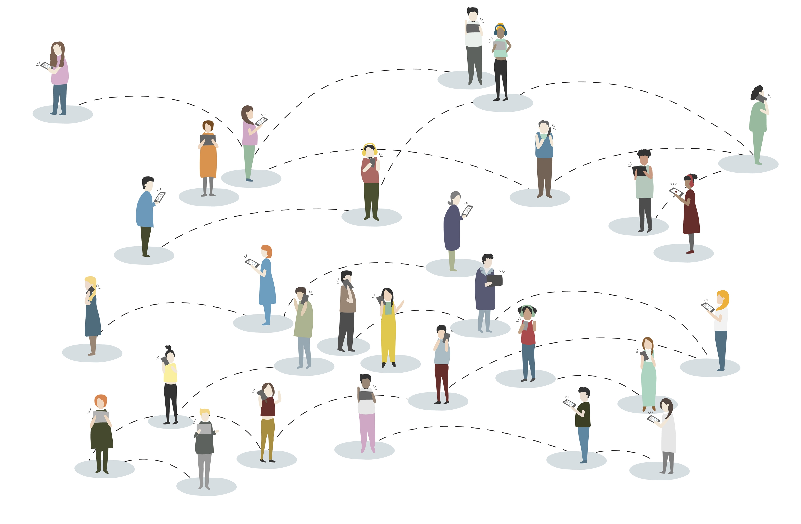

Do you think your friends have more friends than you have? Do you think that you are outside the herd, and that what you think or do is from your own mind?
Anyways…
Let us play this in the vanilla way: Paper chits with names in a bin and drawing them in turn. What can go wrong with this? Ask Avni Gupta.
Should we use this instead? https://www.drawnames.com.sg/secret-santa-generator
Discussion: Nodes, Links, Link Directionality, Connected and Disconnected Networks
This is a game “invented” by Alberto-Laszlo Barabasi, a Network Science pioneer and expert, who has written a wonderful, and wonderfully acessible, book on Network Science, available online http://networksciencebook.com/
{{% vimeo "191074419" %}}
Discussion: Network Mechanisms, Information Flow, Giant Component, Emergence
Discussion: Node Degree, Giant Component? Small Worlds? Multi-Link network, Link Values or Costs
Let us find a Keven Bacon in SMI Foundation Studies Programme!! Six Degrees of Separation…or of Kevin Bacon?
Look at this video before you proceed!
{{% vimeo "14196818" %}}
Discussion: Node Degree, Centrality, Betweenness, Link Values or Costs
Take your favourite Literary Work / TV Serial / Movie and create a Network Database for it.
How? Use conversations between pairs of individuals (nodes) to create links. E.g. each distinct conversation is a link, and the number of sentences uttered is the weight of the link.
Visualize it either with or without tech tools From Teach Engineering, this Activity Sheet https://www.teachengineering.org/activities/view/uno_graphtheory_lesson01_activity2.
Hah! Engineering in a Design college!!
Discussion: Networks are everywhere, Cannot "unsee" them, You are a node and you are a link...are you?
Now that we have an idea of nodes, links and costs, let us get an experience of some more network science ideas:
Discussion: Network Traversal, Node Degree, Centrality, Betweenness, Link Values or Costs
Albert-Laszlo Barabasi. Network Science. http://networksciencebook.com
Dmitry Zinoniev, Network Science Intro Slides. https://www.slideshare.net/DmitryZinoviev/workshop-20212296
The Network Effects Bible. https://www.nfx.com/post/network-effects-bible
Mark Newman, The Physics of Networks. Good intro Power Laws and examples of many networks. Read the PDF
The Historical Network Research Community. https://historicalnetworkresearch.org
Konrad M. Lawson, Toilers and Gangsters: Simple Network Visualization with R for Historians
A Network oriented short story. Frigyes Karinthy, “Chains”. Read PDF
Who told you about Srishti? Where? Mark Granovetter, The Strength of Weak Ties, https://www.cs.cmu.edu/~jure/pub/papers/granovetter73ties.pdf
Michele Coscia. 2019. Who will Cluster the Cluster Makers? https://www.michelecoscia.com/?p=1709 Accessed 12 Jan 2024.
Ran Katzir. Nov 16, 2019. Experience Network Science Through Play.https://medium.com/@ran_katzir/teaching-network-science-using-board-games-f78489a3b3bd
Mark Hoffman, Methods for Network Analysis. https://bookdown.org/markhoff/social_network_analysis/
Omar Lizardo and Isaac Jilbert, Social Networks: An Introduction. https://bookdown.org/omarlizardo/_main/
David Easely and Kleinberg. Networks, Market and Crowds. The Rich get Richer. http://www.cs.cornell.edu/home/kleinber/networks-book/networks-book-ch18.pdf
Song: Kuchh Toh Log Kahenge
Singer: Kishore Kumar
Music: R. D. Burman
Film: Amar Prem (1972)
https://www.youtube.com/watch?v=OK6Hux4spNM
| Hindi Lyrics | English Translation |
|---|---|
| Kuch toh log kahenge | People will say something or the other |
| Logon ka kaam hai kehna | It’s the job of people to say something |
| Chhodo bekaar ki baaton mein | Forget all these useless things |
| Kahin beet na jaaye raina | Or else our night will end just around them |
| Kuch toh log kahenge | People will say something or the other |
| —— | ——- |
| Kuch reet jagat ki aisi hai(2) | Some traditions of the world are such that |
| Har ek subah ki shaam huyi(2) | Every morning has had an evening |
| Tu kaun hai, tera naam hai kya | Who are you and what’s your name |
| Sita bhi yahan badnaam huyi | Even Goddess Sita has been defamed here |
| Phir kyun sansaar ki baaton se | Then why with these conversations of the world |
| Bheeg gaye tere naina | Have your eyes become bedewed |
| Kuch toh log kahenge | People will say something or the other |
| ———- | ———— |
| Humko joh taane dete hai(2) | Those who taunt us saying that |
| Hum khoye hai in rangraliyon mein(2) | We’re lost in this debauchery |
| Humne unko bhi chup chupke | Secretly I’ve also seen them |
| Aate dekha in galiyon mein | Coming in these streets |
| Yeh sach hai jhoothi baat nahi | This is the truth and not a lie |
| Tum bolo yeh sach hai na | You tell me, isn’t this the truth? |
| Kuch toh log kahenge | People will say something or the other |
| … | … |